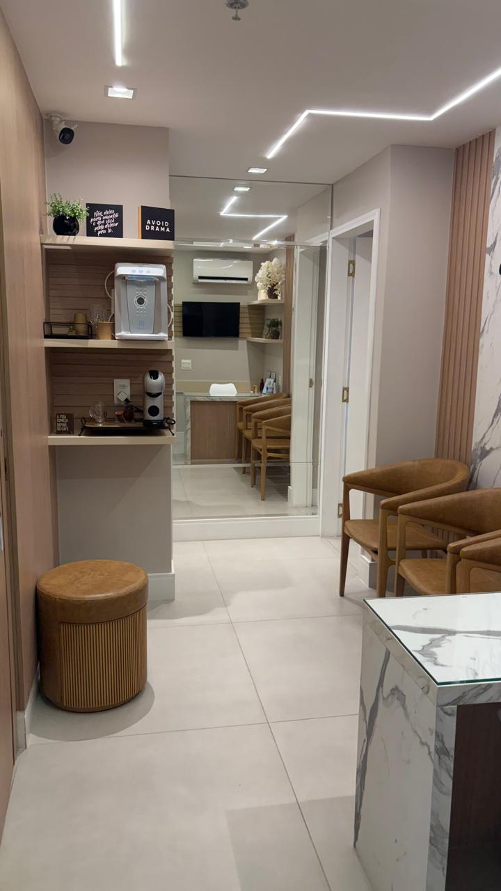
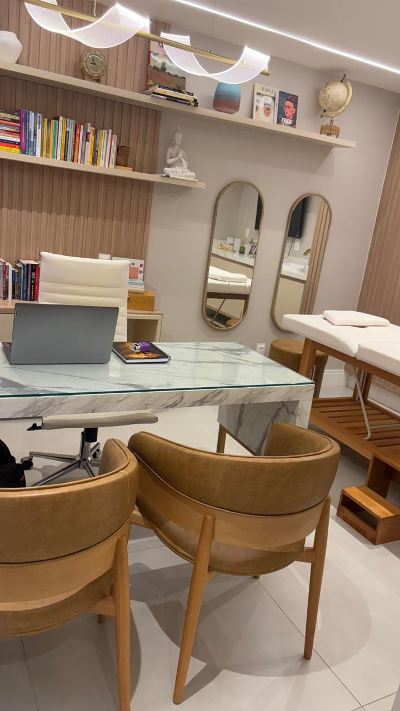
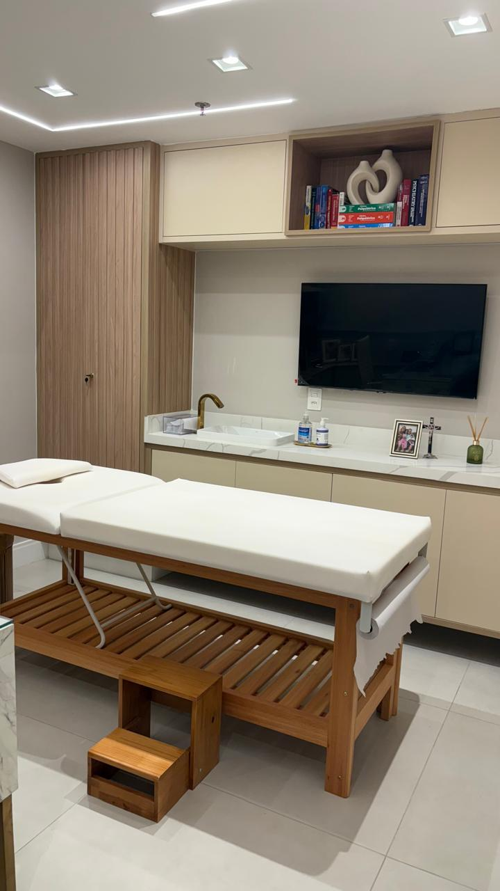

Conheça o Consultório
Um ambiente acolhedor, discreto e preparado para o seu atendimento em Icaraí.




Acompanhamento voltado a adolescentes e adultos com escuta humanizada, ética e sólida formação médica.
Agendar Consulta via WhatsAppExperiência e qualificação contínua voltadas ao cuidado integral do paciente.
Um ambiente acolhedor, discreto e preparado para o seu atendimento em Icaraí.



Acompanhamento médico estruturado para adolescentes e adultos nas seguintes condições:
Quadros caracterizados por alterações persistentes no humor, sensação contínua de desânimo, perda de interesse em atividades rotineiras e fadiga, impactando a funcionalidade interpessoal e profissional.
Condições que envolvem preocupação excessiva, tensão corporal e estado contínuo de alerta, gerando desconfortos físicos e emocionais recorrentes nas rotinas diárias.
Caracteriza-se pela oscilação entre períodos de elevação de energia ou euforia e episódios de rebaixamento do humor, exigindo estabilização e acompanhamento contínuo.
Padrão comportamental frequente de desobediência, postura defensiva ou indisposição frente a figuras de autoridade, necessitando de intervenções integradas para manejo comportamental.
Condição neurológica e comportamental complexa que altera a percepção da realidade, o raciocínio e o processamento de estímulos, tratada com foco na estabilização dos sintomas.
Neurodivergência identificável por particularidades na comunicação social, linguagem e padrões de interesse, atendido com foco na adaptação e qualidade de vida.
Condições associadas à dependência de substâncias ou comportamentos compulsivos, focando no suporte gradual, na redução de danos e na reestruturação do bem-estar pessoal.
Endereço:
Rua Gavião Peixoto, 124 — Sala 503
Icaraí, Niterói — RJ
Modalidades de Atendimento:
• Presencial no consultório em Icaraí
• Online para diversas regiões
Para obter informações sobre horários e agendar sua consulta, entre em contato pelos canais abaixo:
WhatsApp: (21) 98351-4764
E-mail: dr.cesar.romero.life@gmail.com
Instagram: @cesarromerol07